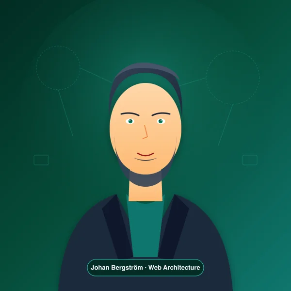
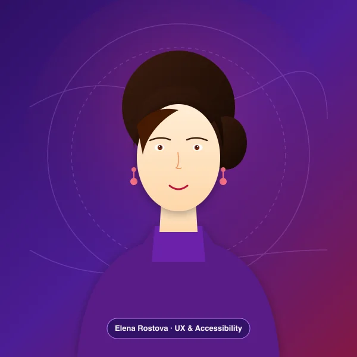
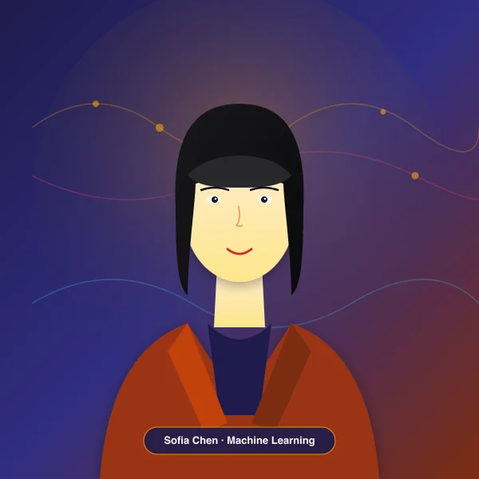
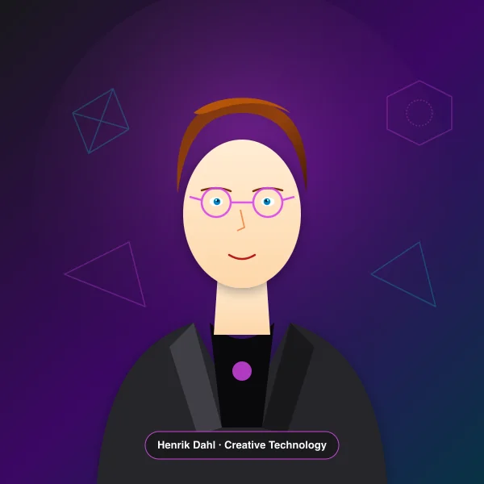

Dr. Astrid Lindholm
Head of AI Research, Nordic Intelligence
Nordens ledande mötesplats inom AI och modern webbutveckling
Där artificiell intelligens möter nästa generations webbutveckling. Utforska autonoma system, intelligenta gränssnitt och framtidens webbstandarder.
En intensiv heldag fylld med banbrytande föreläsningar, tekniska djupdykningar och interaktiva sessioner.
Konferensarrangörerna
Hämta din namnbricka och konferenspaket, njut av en ekologisk frukostbuffé och inled dagen med värdefullt nätverkande.
Dr. Astrid Lindholm, Nordic Intelligence
Hur WebGPU och små, optimerade språkmodeller revolutionerar klientarkitekturer, minimerar svarstider och garanterar användarnas integritet i realtid.
Johan Bergström, CloudNordic
Djupdykning i hur edge-funktioner, distribuerade databaser och smart streaming ersätter traditionella monolit- och mikrotjänstmodeller.
Gemensam aktivitet
Njut av en säsongsbetonad lunchbuffé i Mälarsalen och upplev livedemonstrationer av de senaste AI-verktygen från våra utställande partners.
Elena Rostova, Future Interface
Praktiska metoder för att bygga tillgängliga och inkluderande gränssnitt enligt WCAG 2.2, samt hur multimodala modeller kan assistera funktionshindrade.
Marcus Ekström, SecureWeb Scandinavia
Sårbarhetsanalys och försvarsstrategier när autonoma agenter integreras i webbflöden. Från prompt-injektioner till säkra sandbox-miljöer.
Samtliga talare & inbjudna gäster
En livlig diskussion om öppna webbstandarder kontra stängda ekosystem och hur utvecklarrollen förändras när kodgenererande verktyg blir standard.
Münchenbryggeriets terrass
Avrunda dagen med god mat, dryck och avslappnade diskussioner med talare och branschkollegor med utsikt över Riddarfjärden.
Möt branschens mest inflytelserika tänkare, utvecklare och forskare inom artificiell intelligens och webbteknik.
Head of AI Research, Nordic Intelligence

Principal Web Architect, CloudNordic

Lead UX & Accessibility Engineer, Future Interface
Chief Security Officer, SecureWeb Scandinavia

Staff Machine Learning Engineer, NovaTech

Creative Technologist & Co-founder, HyperWeb Studio
Välj den biljettnivå som passar dina behov bäst. Begränsat antal platser – boka din plats i god tid.
För heltidsstuderande med giltigt student-ID
995 SEK
exkl. moms (1 244 SEK inkl. moms)För professionella utvecklare, UX-designers och IT-arkitekter
2 995 SEK
exkl. moms (3 744 SEK inkl. moms)Den ultimata upplevelsen för ledare, entreprenörer och tech-entusiaster
4 995 SEK
exkl. moms (6 244 SEK inkl. moms)Allt du behöver veta inför ditt besök på Münchenbryggeriet den 20 november 2026.
Närmaste tunnelbanestation är Mariatorget (röd linje), uppgång Torkel Knutssonsgatan (ca 5 minuters promenad). Busslinje 55 och 66 stannar även i direkt anslutning vid hållplats Rosenlund.
Vi strävar efter att göra konferensen tillgänglig för alla. Lokalerna på Münchenbryggeriet uppfyller höga tillgänglighetskrav: